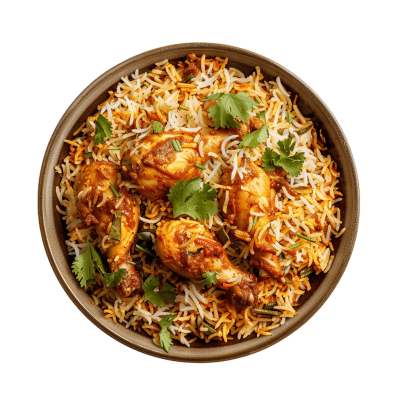

Home Page
Chicken Biriyani

Description
Chicken biryani is a fragrant, spiced rice dish from South Asia, layered with marinated chicken and aromatic basmati rice. Infused with saffron, cardamom, and fresh herbs, it’s a one-pot meal that’s as festive as it is comforting.
This recipe simplifies the traditional process while retaining the bold flavors, making it perfect for special occasions or a hearty family dinner.
Ingredients
- 1 lb boneless chicken, cut into pieces
- 2 cups basmati rice
- ½ cup plain yogurt
- 2 tbsp biryani masala
- 1 tsp turmeric powder
- 1 tsp red chili powder
- 2 onions, thinly sliced
- 2 tomatoes, chopped
- 4 cloves garlic, minced
- 1-inch piece ginger, grated
- 4 cups water
- ¼ cup chopped cilantro and mint
- Pinch of saffron soaked in 2 tbsp warm milk
- 3 tbsp ghee or vegetable oil
- 4 cardamom pods, 4 cloves, 1 cinnamon stick
Steps
- Marinate chicken with yogurt, biryani masala, turmeric, red chili powder, salt, and half the ginger and garlic for 1 hour.
- Rinse basmati rice until water runs clear, then soak for 30 minutes and drain.
- Heat ghee in a large pot. Add cardamom, cloves, and cinnamon; sauté for 30 seconds.
- Add sliced onions and cook until golden brown, about 10 minutes.
- Add remaining ginger, garlic, and tomatoes. Cook until soft, then add marinated chicken and cook for 5 minutes.
- Layer soaked rice over the chicken, add water, and bring to a boil. Reduce heat, cover, and simmer for 20 minutes until rice is cooked.
- Drizzle saffron milk over the rice, garnish with cilantro and mint, and let sit covered for 10 minutes before serving.